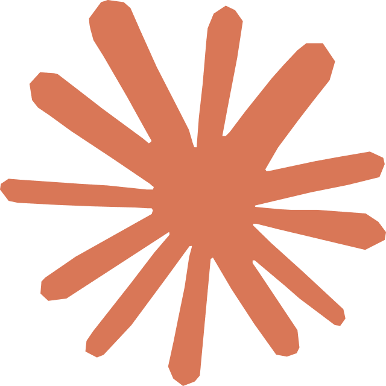
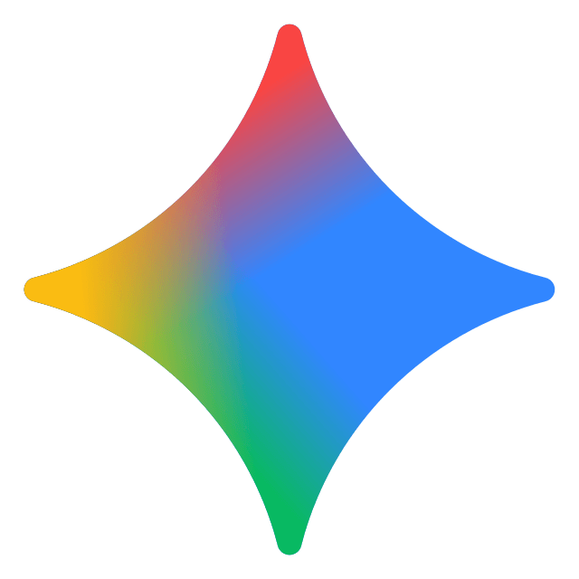

Claude
/
研究员
判断
找材料、做判断、定方向、定内容结构。贵，但应该把它留给最值钱的决策。
别再让一个 AI 从头干到尾了
Claude 研究，ChatGPT 执行，Gemini 呈现。不是找一个最强模型全包，而是直接给它们分工。

Claude / 研究员找材料、做判断、定方向、定内容结构。贵，但应该把它留给最值钱的决策。
把方向变成脚本、文案和 demo 初稿。已经想明白的事，交给它往前推。

Gemini / 设计师把内容变成可展示资产：HTML 页面、版式层级、插图方向、视觉整理。
真正的问题不是模型不够强，而是你把判断、执行、呈现全塞进了同一个脑子里。前面方向一错，后面整条都要返工。
不能只说谁负责什么，还要说清楚为什么是它。看懂这 3 张卡，整套方法就成立了。
先把官方资料和运行逻辑拆清，再做模拟 demo，最后把理解变成流程图和展示页。
先把 Harness Engineering 是什么、怎么运行、官方文档到底在讲什么拆清楚，再判断这条内容最值得从哪个角度切进去。
基于前面的解读结构，先做一个模拟 Harness Engineering 的 demo，把抽象概念变成观众看得懂、能跟着走的演示过程。
最后把这篇 Harness Engineering 解读做成流程图和展示页面，让概念、运行过程和 demo 之间的关系一眼就能看懂。
研究清楚 -> 演示出来 -> 讲清楚。 不是摆一个概念框架，而是把一个技术选题真的做成一条能看懂、能记住、能传播的内容。
最贵的模型，只做最值钱的判断。不要把高判断模型拿去做大量重复输出。
判断、执行、呈现拆开以后，前面错了，不会让后面整条内容跟着一起重来。
把内容拆成三段之后，想法不再堆在一个地方，更容易真正推进成页面和成品。
我把这套自媒体 AI 一人工作流整理成模板了，直接套到你自己的选题、脚本和展示页里就行。
工作流图、三角色分工、提示词骨架、HTML 页面结构，已经帮你整理好了。